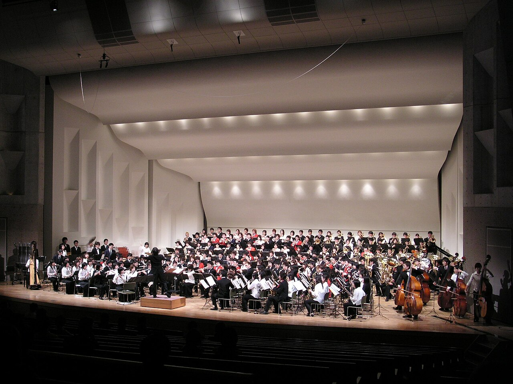
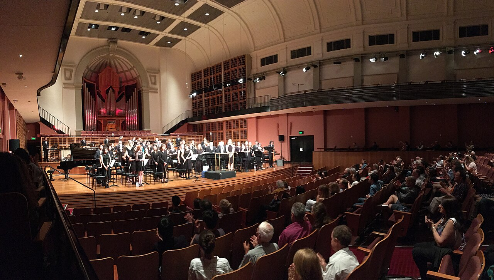
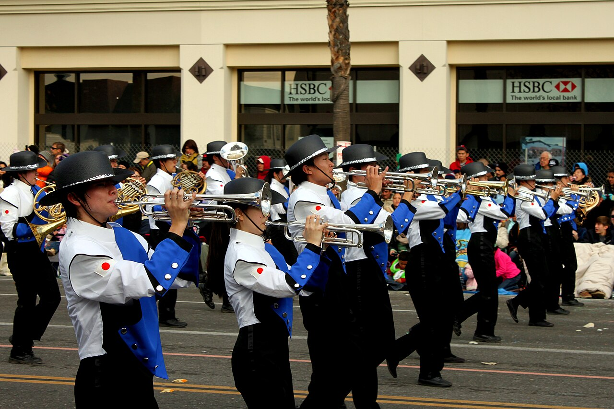
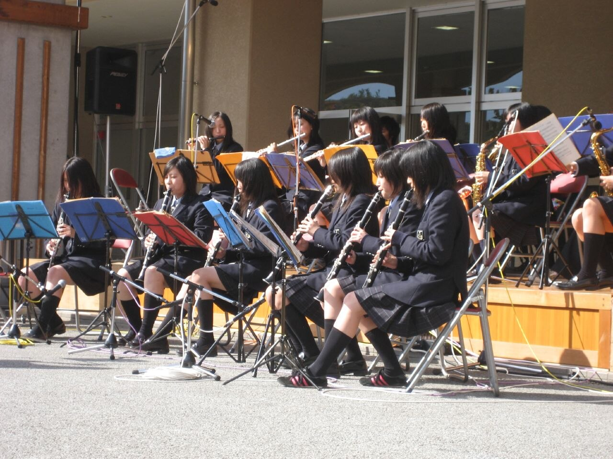
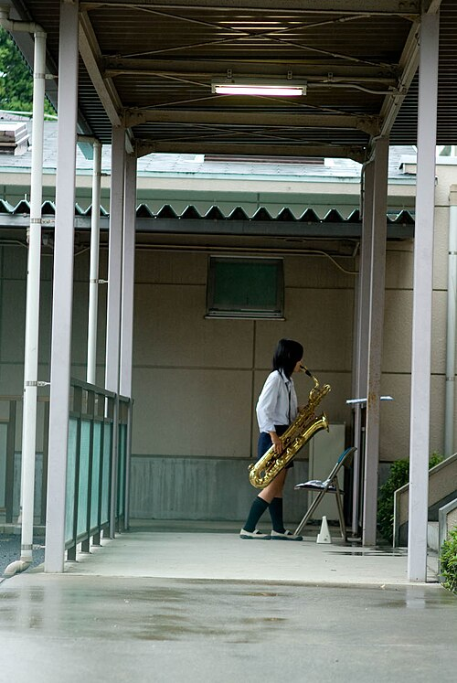
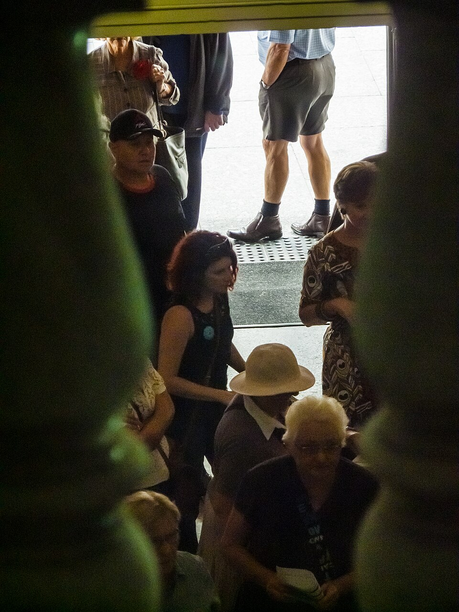
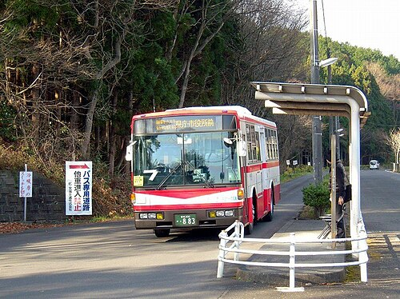

朝凪東高校 吹奏楽部
第41回定期演奏会
12月26日（土） 13:30 開演（13:00 開場）
朝凪市民会館 大ホール
入場無料 整理券が要ります
整理券のもらい方円の中：よその吹奏楽の演奏会。写真：S1197320／Wikimedia Commons／CC BY-SA 3.0

第1部
クラシック
13:30–14:20全員・52人
- スーザ行進曲「星条旗よ永遠なれ」
- ホルスト吹奏楽のための第1組曲 変ホ長調シャコンヌ／間奏曲／行進曲
- ワーグナー歌劇「ローエングリン」より エルザの大聖堂への行列
- チャイコフスキースラヴ行進曲
指揮は顧問の宇佐美 健。休憩は15分（14:20–14:35）。曲の間なら、席を立って出入りできます。
円の中：シドニー大学ウインドオーケストラの演奏会。写真：Philip Terry Graham／Wikimedia Commons／CC BY 2.0

第2部
ポップス
14:35–15:251年生18人の初ステージ
- J. ウィナー茶色の小瓶
- アメリカ民謡聖者の行進客席の通路を歩いて吹きます
- L. プリマシング・シング・シングドラムは2年生
- 岡野貞一 ほかふるさとメドレー故郷／朧月夜／紅葉
- 賛美歌アメイジング・グレイストランペットのソロ
休憩は10分（15:25–15:35）。
横長の窓：Izumo HS Honor Green Marching Band の行進。写真：Prayitno／Wikimedia Commons／CC BY 2.0


第3部
3年生の
引退ステージ
15:35–16:203年生15人が前の列に
- ドヴォルザーク交響曲第9番「新世界より」第4楽章
- ホルスト吹奏楽のための第2組曲 ヘ長調 より「ダーガソンによる幻想曲」
- エルガー行進曲「威風堂々」第1番
最後に、部長の小野寺 沙和があいさつをします。花束・お手紙は、ロビーの受付で3年生の名前の箱に預かります。
3年生15人のパート
| フルート・クラリネット | フルート2・クラリネット3 | 5 |
|---|---|---|
| サックス | アルト1・テナー1 | 2 |
| トランペット・ホルン | トランペット3・ホルン1 | 4 |
| トロンボーン・ユーフォニアム | トロンボーン2・ユーフォニアム1 | 3 |
| 打楽器 | ティンパニ | 1 |
大きな円：屋外のステージで演奏する高校生。写真：Charlotte Marillet／Wikimedia Commons／CC BY-SA 2.0
縦の窓：渡り廊下でサックスを吹く人。写真：Shinichi Sugiyama／Wikimedia Commons／CC BY-SA 2.0
整理券のもらい方
11月28日（土）から、3か所で配ります。1人4枚まで。なくなり次第終わります（全部で1,100枚）。
朝凪市民会館 1階 窓口
9:00–20:00（月曜は休館）
会館の正面玄関を入って右。
朝凪東高校 事務室
平日 9:00–16:30
正門で受付に名前を書いてから入ってください。
朝凪駅前 観光案内所
9:00–18:00（12月1日（火）まで）
駅の北口を出て左。300枚だけ置きます。
整理券の番号と、並ぶ時刻
当日は整理券の番号順に入ります。右上の番号を入れてください。
B列に並んでください
12:50 集合 → 13:05 入場
正面玄関の前に、B の札が立っています。
| 番号 | 列 | 集合 | 入場 |
|---|---|---|---|
| 1–200 | A | 12:45 | 13:00 |
| 201–400 | B | 12:50 | 13:05 |
| 401–600 | C | 12:55 | 13:10 |
| 601–800 | D | 13:00 | 13:15 |
| 801–1100 | E | 13:05 | 13:20 |
13:25からは、番号に関係なく入れます。
- 整理券1枚で1人が入れます。席は自由です。
- 小学生になる前のお子さんは、ひざの上なら整理券は要りません。
- 車いすの席は8席あります。学校の代表電話で、吹奏楽部の宇佐美までお知らせください。
- 残りがあれば、当日12:00から会館1階で配ります。残りの枚数は、毎週金曜にこのページで書きかえます（11月7日現在、配る前です）。
- 電話・メールでの取り置き、郵送はしていません。

アーチの中：演奏会の開場を待って並ぶ人（ブリスベン市庁舎のロビー）。写真：John Robert McPherson／Wikimedia Commons／CC BY-SA 4.0

市民会館への行き方
電車
臨海線 朝凪駅の北口から、海岸通りを東へ歩いて13分。
バス
北口2番のりば「市民会館前」行き。4分、運賃 190円。開演に間に合う便：
12:0512:2512:4513:05
車
会館の駐車場は210台（1回300円）。昼には満車になる見込みです。臨時駐車場は朝凪東高校のグラウンド（120台・無料・12:00から）。
自転車
会館の西側に80台。
円の中：停留所に着く路線バス（宮城交通）。写真：Mutimaro／Wikimedia Commons／CC BY-SA 3.0
雨や雪でも開きます。大雪などで取りやめるときは、当日7:00までにこのページのいちばん上に書きます。